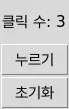

인공지능 파이썬 실무
인공지능 파이썬 실무버튼 클릭 수 세기
이 튜토리얼은 GUI 창을 엽니다. 웹 실습실에서는 실행되지 않으니 코드를 복사해 PC의 파이썬(IDLE 등)에서 실행하며 따라 하세요.
처음엔 코드를 주고, 점점 직접 쓰게 됩니다.
클릭 수를 보여 줄 Label을 만듭니다.
import tkinter as tk root = tk.Tk() root.title("클릭 수 세기") count = 0 count_label = tk.Label(root, text="클릭 수: 0") count_label.pack(pady=10) root.mainloop()확인: "클릭 수: 0"이라는 글자가 있는 창이 뜹니다.
누를 때마다 count를 1씩 늘리고 라벨을 갱신하는 함수를 만들어 버튼에 연결합니다. count는 함수 밖의 변수이므로 함수 안에서 global로 선언합니다. mainloop() 앞에 추가합니다.
def click(): ____ count count += 1 count_label.____(text=f"클릭 수: {count}") click_button = tk.Button(root, text="누르기", command=click) click_button.pack()빈칸 힌트
- 첫 번째 빈칸: 함수 밖 변수를 함수 안에서 수정하려 할 때 쓰는 키워드 (global)
- 두 번째 빈칸: 위젯의 속성을 바꾸는 메서드 이름 (config)
확인: "누르기" 버튼을 누를 때마다 "클릭 수: 1", "클릭 수: 2"처럼 숫자가 하나씩 늘어납니다.
정답 코드 보기
def click(): global count count += 1 count_label.config(text=f"클릭 수: {count}") click_button = tk.Button(root, text="누르기", command=click) click_button.pack()count를 0으로 되돌리는 초기화 함수 reset()을 만들고, "초기화" 버튼을 만들어 연결하세요. click() 함수에서 global을 어떻게 썼는지 떠올려 같은 방식으로 작성하세요.
확인: 여러 번 누른 뒤 "초기화" 버튼을 누르면 클릭 수가 다시 0으로 돌아갑니다.
정답 코드 보기
def reset(): global count count = 0 count_label.config(text="클릭 수: 0") reset_button = tk.Button(root, text="초기화", command=reset) reset_button.pack()
LEARNING JOURNAL